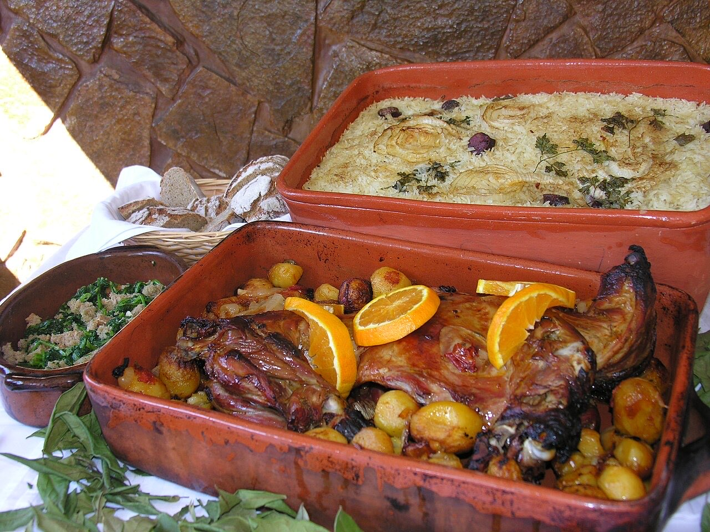
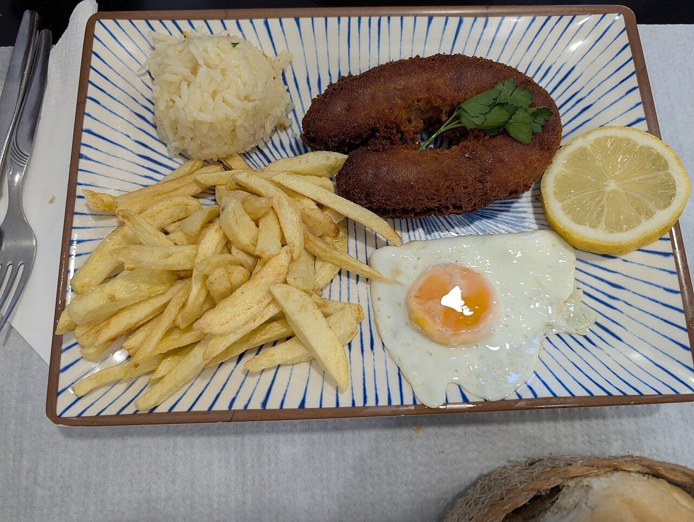
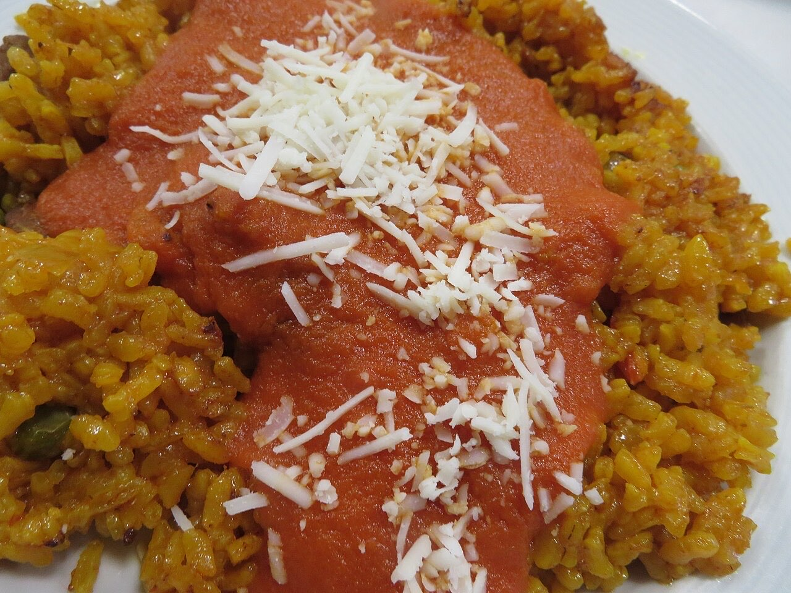

Cozinha tradicional portuguesa · Guimarães
Petiscos de avó, até dizer basta
Formato a preço fixo, trazidos à mesa até pedir para parar.
Pataniscas, alheira, moelas de tomate e cabrito assado.
Peça da mesa por QR code e não perca um petisco.
A Taberna d'Avó é uma casa familiar de cozinha tradicional na Rua Egas Moniz, em Guimarães. Venha petiscar pataniscas com arroz de feijão, alheira e bolinhos de bacalhau, à descrição.



Fotografias ilustrativas — no site final usamos as vossas.
Novo · Pedidos por QR code
Menos espera nas horas de ponta, menos enganos nos pedidos e a equipa livre para servir.
Pedido de reserva
Escolha o dia e a hora — o pedido chega por WhatsApp e confirmamos logo.
↑ Assim chegaria a mensagem ao vosso WhatsApp. (Nesta demonstração nada é enviado.)
Onde estamos
Proposta para Taberna d'Avó
Esta página foi feita de propósito para Taberna d'Avó por João Machado, programador web aqui de Guimarães. Inclui:
Eu trato do alojamento e da manutenção. Sem compromisso.